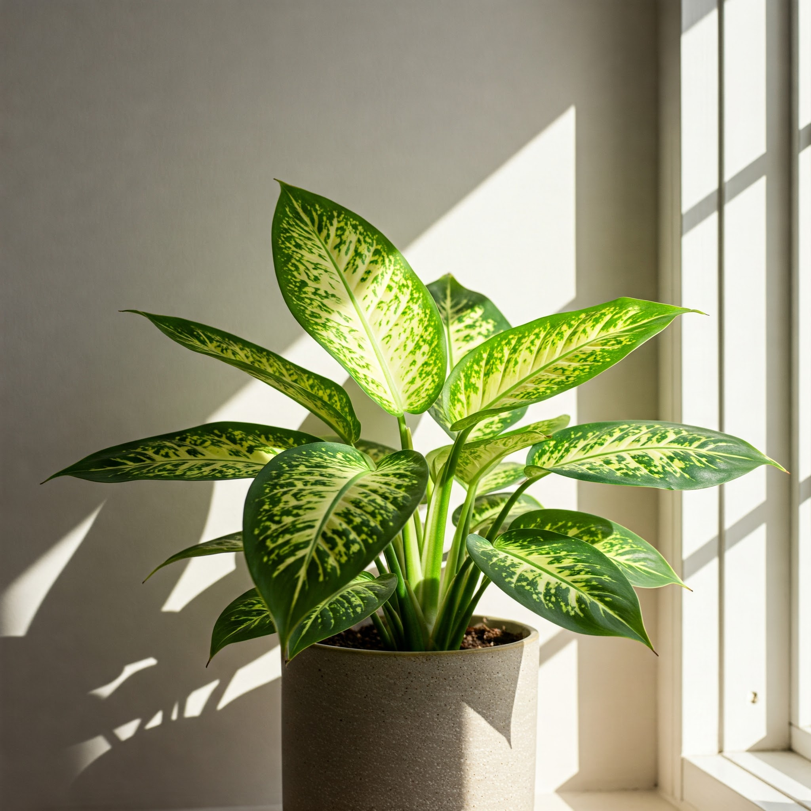

Dieffenbachia (Dumb Cane)

Description
Dieffenbachia, commonly known as Dumb Cane, is a popular and striking houseplant appreciated for its large, lush leaves often patterned with attractive variegation in shades of green, cream, and white. Native to the tropical Americas, it brings a bold, jungle-like feel to indoor spaces. It grows upright on a cane-like stem.
Care Instructions
- Light: Prefers bright, indirect light. Avoid direct sunlight, which can scorch the leaves. Can tolerate lower light conditions but may grow slower and lose some variegation. An east or north-facing window is often ideal.
- Water: Water thoroughly when the top 1-2 inches (2-5 cm) of soil become dry. Allow excess water to drain away. Avoid overwatering, as this can lead to root rot. Reduce watering frequency during the fall and winter months.
- Soil: Use a well-draining, peat-based potting mix.
- Temperature: Thrives in average room temperatures between 18-27°C (65-80°F). Protect it from cold drafts and sudden temperature drops.
- Humidity: Appreciates higher humidity levels. Misting, using a pebble tray, or placing a humidifier nearby can be beneficial, especially during the winter heating season in Munich when indoor air tends to be dry.
- Fertilizer: Feed with a balanced liquid houseplant fertilizer diluted to half-strength every 4-6 weeks during the spring and summer growing season. Do not fertilize in fall and winter.
Fun Facts
- Common Name Origin: The name "Dumb Cane" comes from the toxic effects of its sap. If ingested, the calcium oxalate crystals cause painful swelling of the mouth and throat, potentially leading to a temporary inability to speak.
- Origin: Native to the tropical rainforests of Central and South America.
- Air Purifier: Like many tropical foliage plants, it contributes to improving indoor air quality.
- Variety: Many cultivars exist with different leaf patterns, sizes, and variegation.
Toxicity
Caution: Highly Toxic to humans, cats, and dogs if ingested. Contains insoluble calcium oxalate crystals. Chewing or ingestion causes intense pain, swelling of the mouth, tongue, and throat, excessive drooling, vomiting, and difficulty swallowing or breathing in severe cases. Keep well out of reach of children and pets. Use gloves when pruning if you have sensitive skin, as the sap can cause irritation.